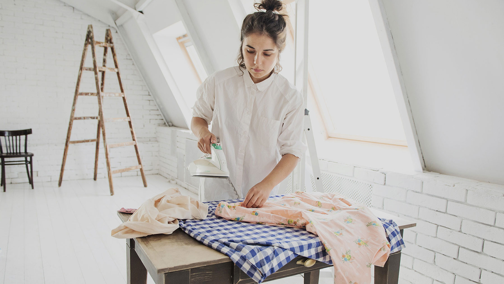

Что такое Кукабарра?
В первую очередь, это образ мышления. Какой? Ну если очень коротко — интеллигентный. Если шире — мудрый, осознанный, свободный. Допускающий разное, уважающий незнакомое.
Ну это в целом, по-философски.
А так-то Кукабарра — это одежда и ещё кое-что для детей. Это вещи для тех, кто думает. Думает о том, где живёт, что носит и что предлагает другим людям. Для тех, кто ценит историю и труд. Для тех, кто не гонится, а смотрит вокруг.
Все махинации с текстилем для Кукабарры делаю я, Альфия Айситулина. Я придумываю модель, ищу красивую ткань, занимаюсь раскроем, ну и, собственно, шью.
Поиск ткани — один из самых важных и интересных этапов работы. Для платьев Kookaburra используется винтажный хлопок со всего мира. Это совершенно новая, прекрасно сохранившаяся ткань, выпущенная в 60-е – 80-e годы. Я ищу её в как в Санкт-Петербурге, так и в других городах во время путешествий.
Почему выбор пал именно на старинные ткани? Потому что для меня важно понятие «аутентичность». Ретро-силуэт — это одно. Ретро-силуэт, законченный ретро-тканью — совсем другое.
Плюс невозможно промолчать о проблеме гиперпроизводства: на моей маленькой фабрике её точно нет. Материалы для детских свитшотов я покупаю на петербургских швейных предприятиях — это остатки ткани, которые слишком малы для машинного раскроя, а для ручной работы годятся в самый раз.
Мне очень радостно от того, что вам нравятся мои работы и близка идея Кукабарры. Пишите письма и давайте дружить.